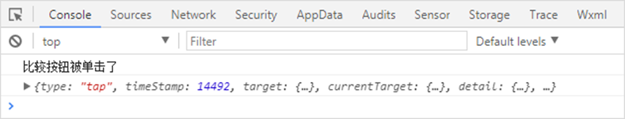
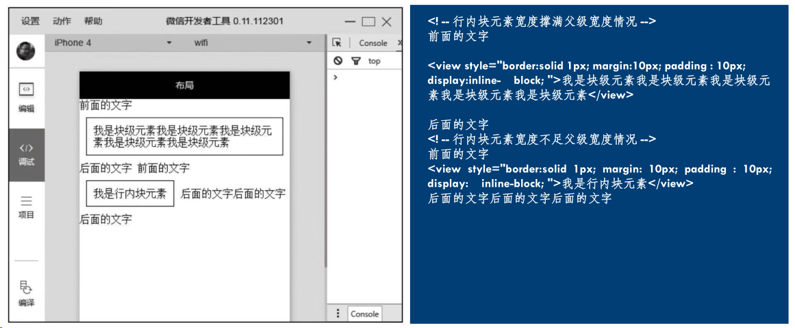
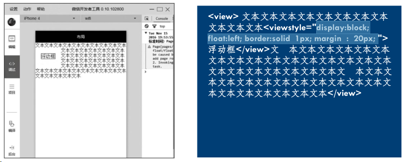
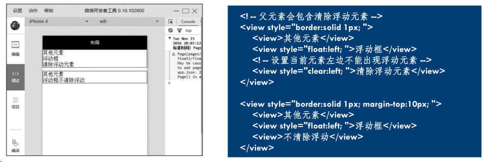
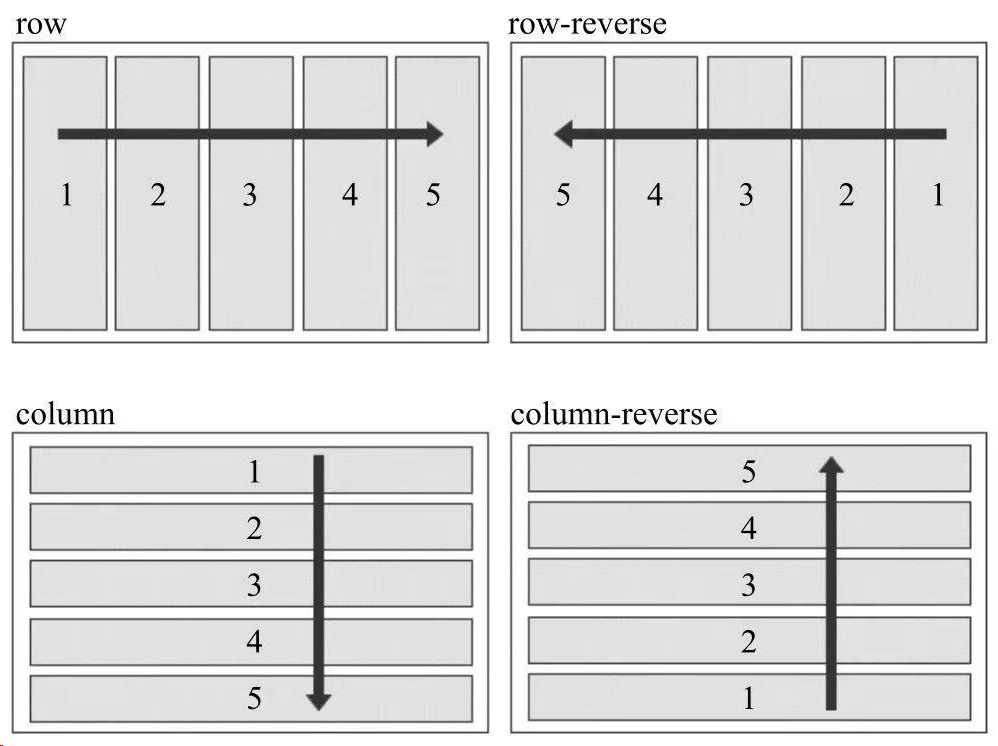
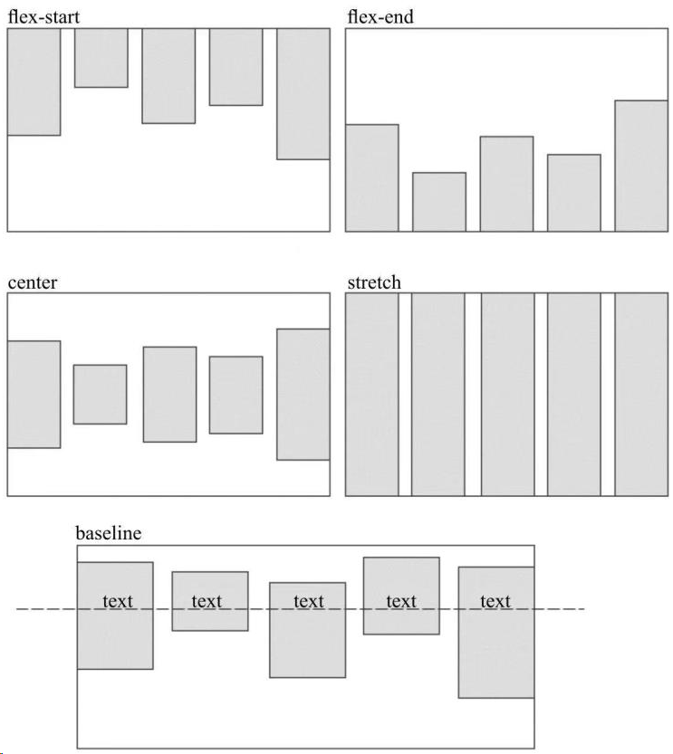
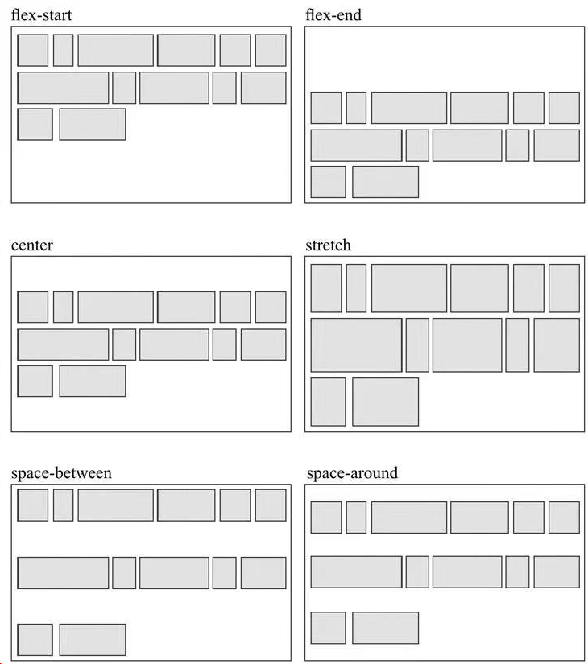
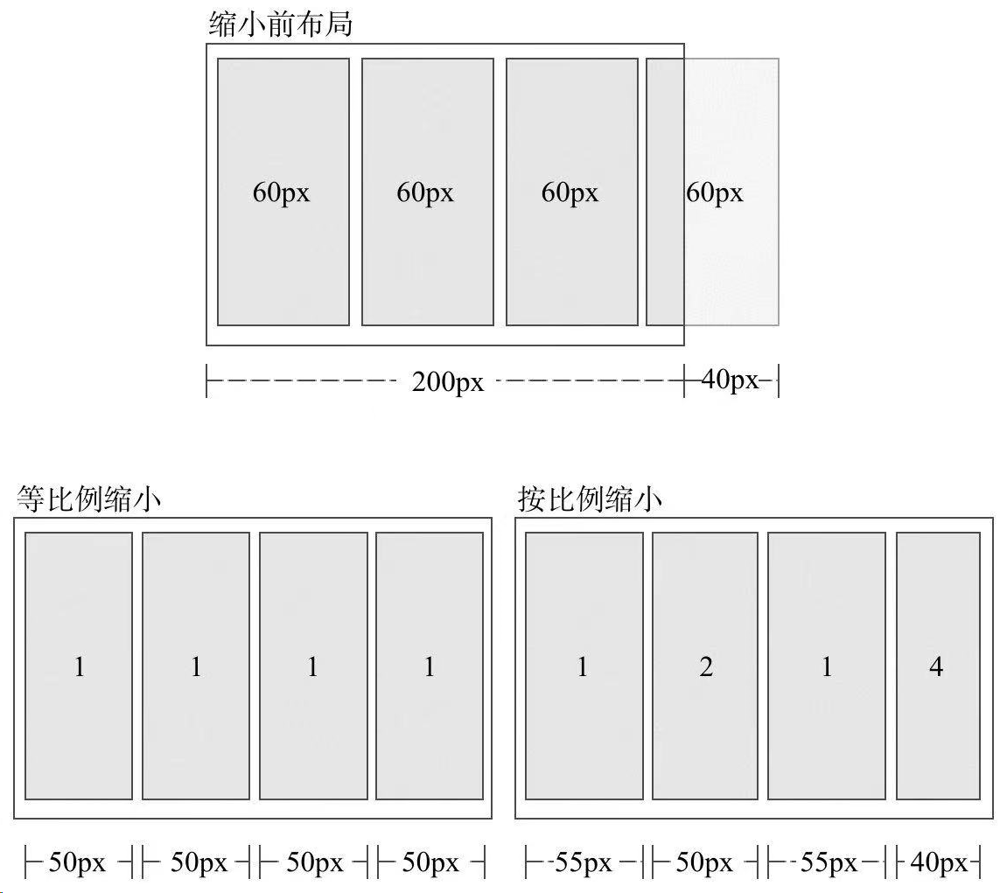
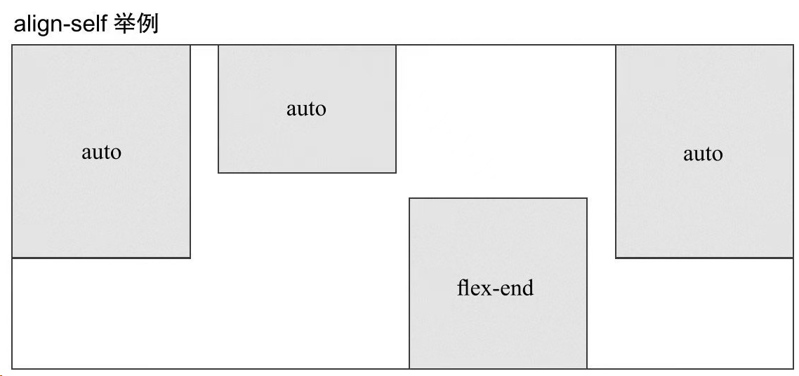

Introduction第一个小程序开发工具主界面菜单栏:工具栏:模拟器:目录树:编辑区:调试器:小程序文件类型开发基础页面组件页面样式选择器px和rpx配置文件页面逻辑生命周期冒泡布局基本知识盒子模型块级元素行内元素行内块元素浮动和定位浮动(FLOAT)定位Flex布局基本概念容器属性项目属性组件组件定义和属性视图容器view/scroll-viewswpier基础组件ICONTEXTPROCESS表单组件RADIOCHECKBOXSWITCHLABELSLIDERPICKERTIME PICKERDATA PICKERPICKER-VIEWINPUTTEXTAREABUTTONFORM导航组件NAVIGATOR媒体组件IMAGEAUDIOVIDEO地图组件MAP画布组件CANVAS服务器数据交互wx.request表单数据绑定
Introduction
鲍亚运
小程序
平时作业 50% 大作业 50% (每组4-5人, 最后两节课展示)
第一个小程序
开发工具
微信开发者工具（稳定版 Stable Build）下载地址与更新日志 | 微信开放文档 (qq.com)
主界面
小程序开发工具主界面包括菜单栏、工具栏、模拟器、目录树、编辑区、调试器六大部分。
菜单栏:
可以访问微信开发者工具的大部分功能：
- 项目：用于新建项目或打开一个现有的项目。
- 文件：用于新建文件、保存文件或关闭文件。
- 编辑：用于编辑代码，对代码进行格式化。
- 工具：用于访问一些辅助工具。
- 界面：用于控制界面中各部分的显示和隐藏。
- 设置：用于对外观、快捷键、编辑器等进行设置。
- 微信开发者工具：可以进行切换账号、更换开发模式、调试等操作
工具栏:
提供了一些常用功能的快捷按钮：
- 个人中心：位于工具栏最左侧第1个按钮，显示当前登录用户头像。
- 模拟器、编辑器和调试器：用于控制相应工具的显示和隐藏。
- 云开发：开发者可以使用云开发来开发小程序、小游戏。云开发能力从基础库2.2.3开始支持。
- 模式切换下拉菜单：用于在小程序模式搜索动态页和插件模式之间切换。
- 编译下拉菜单：用于切换编译模式，默认为普通编译。
- 编译：编写小程序的代码后，需要编译才能运行。
- 预览：单击预览按钮会生成一个二维码，使用手机中的微信扫描二维码。
- 真机调试：通过网络连接对手机上运行的小程序进行调试。
- 切后台：用于模拟小程序在手机中切后台的效果。
- 清缓存：用于清除数据缓存、文件缓存等。
- 上传：用于将代码上传到小程序管理后台。
- 版本管理：用于通过Git对小程序进行版本管理。
模拟器:
模拟器用于模拟手机环境，查看不同型号手机的运行效果
目录树:
可以查看文件目录结构
编辑区:
可以编辑文件代码
调试器:
调试器类似于Google Chrome浏览器中的开发者工具：
- Console：控制台面板，用于输出调试信息，也可以直接编写代码执行。
- Sources：源代码面板，可以查看或编辑源代码，并支持代码调试。
- Network：网络面板，记录网络请求信息，根据它可进行网络性能优化。
- Security：安全面板，用于调试页面的安全和认证等信息，如HTTpS。
- AppData：App数据面板，可以查看或编辑当前小程序运行时的数据。
- Audits：审计面板，用于对小程序进行体验评分。
- Sensor：传感器面板，用于模拟地理位置、重力感应。
- Storage：存储面板，用于查看和管理本地数据缓存。
- Trace：跟踪面板，用于真机调试时跟踪调试信息。
- Wxml：Wxml面板，用于查看和调试WXML和WXSS。
小程序文件类型
文件类型主要有: *.json：配置文件
主要用于配置小程序的全局配置和页面配置等，如小程序的窗口背景色、页面路径等。
*.wxml: 模板文件
用于描述小程序的界面结构，包括布局、组件、数据绑定等。
*.wxss：样式文件
用于描述小程序的样式，包括字体、颜色、布局等。
*.ts/*.js：逻辑文件
用于处理小程序的业务逻辑、事件处理等，包括数据处理、网络请求等。

| 路径 | 说明 |
|---|---|
| project.config.json | 项目配置文件 |
| app.js | 应用程序的逻辑文件 |
| app.json | 应用程序的配置文件 |
| app.wxss | 应用程序公共样式文件 |
| pages/ | 存放页面文件目录 |
| pages/index/ | 存放index页面的目录 |
| pages/index/index.ts | Index页面的逻辑文件 |
| pages/index/index.json | Index页面的配置文件 |
| pages/index/index.wxml | Index页面的结构文件 |
| pages/index/index.wxss | Index页面的样式文件 |
| pages/logs/ | 存放logs页面的目录 |
| pages/logs/logs.ts | logs页面的逻辑文件 |
| pages/logs/logs.json | logs页面的配置文件 |
| pages/logs/logs.wxml | logs页面的结构文件 |
| pages/logs/logs.wxss | logs页面的样式文件 |
| utils/ | 存放公共脚本文件的目录 |
| utils/utils.js | 公共脚本文件，保存一些工具代码 |
开发基础
页面组件
| 标签 | 功能 | 标签 | 功能 |
|---|---|---|---|
| 视图容器 | 图标文件 | ||
| 文本域 | 复选框 | ||
| 按钮 | 单选框 | ||
| 图片 | 输入框 | ||
| 表单 | 进度条 |
页面样式
选择器
| 选择器 | 示例 | 说明 |
|---|---|---|
| .class | .container | 选择所有class="container"的组件 |
| #id | #id | 选择id="#id"的组件 |
| element | view | 选择所有view组件 |
| element, element | view, text | 选择所有view组件和所有text组件 |
| ::after | view::after | 在view组件内的后面插入内容 |
| ::before | view::before | 在view组件内的前面插入内容 |

px和rpx
px-物理像素：指屏幕上实际有多少个像素。
rpx-逻辑像素：是指CSS中使用的像素单位。
配置文件
页面级配置文件 - index.json
| 属性 | 说明 |
|---|---|
| navigationBarBackgroundColor | 导航栏背景颜色，默认为“#000000” |
| navigationBarTextStyle | 导航栏标题颜色，仅支持black、white（默认） |
| navigationBarTitleText | 导航栏的标题文字内容 |
| backgroundColor | 窗口的背景色，默认为“#ffffff” |
| backgroundTextStyle | 下拉loading的样式，仅支持dark（默认）、light |
| enablePullDownRefresh | 是否全局开启下拉刷新，默认为false |
| onReachBottomDistance | 页面上拉触底事件触发时距页面底部距离（单位为px），默认为50 |
| disableScroll | 默认为false。设为true时，页面整体不能上下滚动 |
应用级配置文件 – app.json
| 属性 | 说明 |
|---|---|
| pages | 页面路径列表 |
| window | 全局的默认窗口表现，可以一次设置多个页面级配置 |
| tabBar | 底部 tab 栏的表现 |
| networkTimeout | 网络超时时间 |
| debug | 是否开启调试模式，默认为false |
| requiredBackgroundModes | 需要在后台使用的能力，如“音乐播放” |
| plugins | 使用到的插件 |
| 属性 | 类型 | 说明 |
|---|---|---|
| request | Number | wx.request()的超时时间（毫秒），默认为60000 |
| connectSocket | Number | wx.connectSocket()的超时时间（毫秒），默认为60000 |
| uploadFile | Number | wx.uploadFile()的超时时间（毫秒），默认为60000 |
| downloadFile | Number | wx.downloadFile()的超时时间（毫秒），默认为60000 |
页面逻辑
生命周期
微信小程序的生命周期分为两个部分：应用生命周期和页面生命周期。
- 应用生命周期：
- onLaunch(options)：小程序初始化时触发，只执行一次，可以在此获取小程序启动时的参数。
- onShow(options)：小程序启动或从后台进入前台时触发。
- onHide()：小程序从前台进入后台时触发。
- onError(error)：小程序发生脚本错误或 API 调用失败时触发。
- 页面生命周期：
- onLoad(options)：页面加载时触发，可以在此获取页面参数。
- onShow()：页面显示时触发。
- onReady()：页面初次渲染完成时触发。
- onHide()：页面从前台进入后台时触发。
- onUnload()：页面卸载时触发。
除了上述生命周期函数，还有一些特殊的生命周期函数，例如：
- onPullDownRefresh()：页面下拉刷新时触发。
- onReachBottom()：页面上拉触底时触发。
- onPageScroll(Object)：页面滚动时触发。
状态模式-单向数据流。 状态模式定义一个对象，改对象可以通过管理其状态的变化，从而实现应用程序做出相应的变化。

| 属性 | 说明 |
|---|---|
| type | 事件类型 |
| timeStamp | 事件生成时间戳 |
| target | 触发事件的组件的一些属性值集合 |
| currentTarget | 当前组件的一些属性集合 |
| detail | 额外的信息 |
冒泡
冒泡事件是指当一个组件上的事件被触发后，事件会向父节点传递，而非冒泡事件不会向父节点传递。
生命周期回调函数的区别分析如下： 点击outer => outer – outer 点击inner => inner - outer
<view bindtap="viewtap" id="outer"> outer <view id="inner">inner</view></view>viewtap: function(e) { console.log(e.target.id + '-' + e.currentTarget.id)}| 属性 | 类型 |
|---|---|
| touchstart | 手指触摸动作开始 |
| touchmove | 手指触摸后移动 |
| touchcancel | 手指触摸动作被打断，如来电提醒，弹窗 |
| touchend | 手指触摸动作结束 |
| tap | 手指触摸后马上离开 |
| longpress | 手指触摸后，超过350ms再离开。如果指定了事件回调函数并触发了这个事件，tap事件将不被触发 |
布局
基本知识
盒子模型
盒子模型是CSS布局的基础； CSS将页面汇总所有的元素的都设置为一个个矩形的盒子。元素设置为矩形的盒子后，对页面的布局就变成了将不同的盒子摆放到不同的位置；
- Content：内容区域
- Padding：内边距
- Border：边框
- Margin：外边距

微信小程序wxss完全遵守W3C盒子模型规范
W3C width =
content widthIE width =content width + padding + border
块级元素
display:block
默认占一行，一般一行一个块级元素，添加新的会自动换行
一般作为容器出现，用于组织结构
宽度默认width+marginLeft+marginRight+paddingLeft+paddingRight刚好等于父级元素内容区宽度除非设定一个新宽度，这里需要注意，当设置块级元素宽度为100%时，如果当前块级元素存在padding、margin会导致块级元素溢出父元素。
盒子模型高度默认由内容决定。
盒子模型中高度、宽度及外边距和内边距都可控制。
可以容纳行内元素和其他块级元素。
<view/>是一个块级元素

行内元素
display:inline
和其他非块级元素都在一行上。
盒子模型中高度、宽度、上下margin、上下padding设置均无效，只能设置左右margin和左右padding。
宽度就是文字或图片的宽度，不可改变。
行内元素宽度、高度都不能直接设
行内元素只能容纳文本或其他行内元素，在行内元素中放置块级元素会引起不必要的混乱。
<text/>是一个行内元素
行内块元素
display:inline-block
行内块元素是块级元素和行内元素的混合物
行内块元素可以设置宽、高、内边距和外边距，可以简单认为行内块元素是把块级元素以行的形式展现，保留了块级元素对宽、高、内边距、外边距的设置，它就像一张图一样放在一个文本行中。

浮动和定位
定位的基本思想很简单，它允许你定义元素框相对于其正常位置应该出现在哪，或者相对于父元素、另一个元素甚至浏览器窗口本身的位置。
浮动(FLOAT)
float: left/right
通过设置float属性，浮动的框可以向左或者向右移动，直到其外边缘碰到包含框或另一个浮动框的边框为止;
floar不完全是定位，它不是正常流布局（不在文档的普通流中）。文档的普通流中的会表现的浮动框不存在一样，其他内容会环绕过去。

下图中父级元素的边框并没有包裹浮动框，这是浮动的一个特性，父级元素不计算浮动元素高度。

float: left/right => clear
但在某些情况下我们仍然希望在使用浮动的同时，父级元素的高度能包裹浮动元素，可以设置属性clear（清除）。确保当前元素的左边、右边或左右两边同时不能出现浮动的元素。

定位
Position: static/relative/absolute/fixed/sticky
static： static是position的默认值。块级元素生成一个矩形框，作为文档流的一部分，行内元素则会创建一个或多个行框，置于其父元素中。relative：元素框偏移某个距离。元素仍保持其未定位前的形状，它原本所占的空间仍保留。absolute：元素框从文档流中完全删除，并相对于其包含块定位，包含块可能是文档中的另一个元素或者是初始包含块。对于absolute来说，包含块是离当前元素最近的position为absolute或relative的父元素，如果父元素中没有任何absolute或relative布局的元素，那么包含块就是根元素。使用position布局后，元素原先在正常文档流中所占用的空间会关闭，就好像该元素原来不存在一样。元素定位后生成一个块级框，不论原来它在正常流中生成何种类型的框。fixed：元素框的表现类似于将position设置为absolute，不过其包含块是视窗本身。sticky：可以被认为是相对定位和固定定位的混合。元素在跨越特定阈值前为相对定位，之后为固定定位。#one { position: sticky; top: 10px; } 在 viewport 视口滚动到元素 top 距离小于 10px之前，元素为相对定位。之后，元素将固定在与顶部距离 10px 的位置，直到 viewport 视口回滚到阈值以下。

Flex布局
基本概念
display:flex /inline-flex
浮动和定位是传统布局解决方案，在一些情况中非常不方便
Flex布局主要由容器和项目构成，采用Flex布局的元素，称为Flex容器（flex container），它的直接子元素为容器成员，称为Flex项目（flex item）
容器属性
flex-direction用于指定水项目排列的方向：
- row：主轴为水平方向，起点在左端，默认值。
- row-reverse：主轴为水平方向，起点在右端。
- column：主轴为垂直方向，起点在上沿
- column-reverse：主轴为垂直方向，起点在下沿。

flex-warp用来指定如果一列排不下，该如何换行，默认情况下，项目都排在一条线上：
- nowrap：不换行，默认值。
- wrap：换行，第一行在上方。
- wrap-reverse：换行，第一行在下方。
当设置换行时，还需要设置align-item属性配合实现自动换行，并且align-item的值不能为“stretch”

align-items指定项目在垂直方向上如何对齐：
- flex-start：垂直方向top对齐。
- flex-end：垂直方向bottom对齐。
- center：垂直方向middle对齐。
- baseline：项目根据它们第一行文字的基线对齐。
- stretch：如果项目未设置高度或设置为auto，项目将在交叉轴方向拉伸填充整个容器，默认值。

align-content用来定义项目多根轴线（出现换行后）在交叉轴上的对齐方式，如果项目只有一根轴线，该属性不起作用：
- flex-start：与垂直方向的起点对齐。
- flex-end：与垂直方向的终点对齐。
- center：与垂直方向的中点对齐。
- space-between：与垂直方向两端对齐，轴线之间的间隔平均分布。
- space-around：每根轴线两侧的间隔都相等，轴线之间的间隔比轴线与边框间隔大一倍。
- stretch：轴线占满整个交叉轴，每个项目会被拉伸直至填满交叉轴，默认值

justify-content属性定义了项目在水平轴上的对齐方式：
- flex-start：左对齐，默认值。
- flex-end：右对齐。
- center：居中。
- space-between：两端对齐，项目之间的间隔都相等。
- space-around：每个项目两侧的间隔相等。所以，项目之间的间隔比项目与边框的间隔大一倍。

项目属性
order: <integer>项目的排列顺序，数值越小，排列越靠前，默认为0
flex-grow: <number>项目的放大比例，默认为0，即如果存在剩余空间，也不放大：
- 如果所有项目的flex-grow值都为1，则它们将等分剩余空间（如果有的话）。
- 如果一个项目的flex-grow属性为2，其他项目都为1，则前者占据的剩余空间将比其他项多一倍，整体按比例填充剩余空间。

flex-shrink: <number>项目的缩小比例
- 如果所有项目的flex-shrink属性都为1，当空间不足时，都将等比缩小。
- 如果一个项目的flex-shrink属性为0，其他项目都为1，则空间不足时，前者不缩小，负值对该属性无效

如一个容器宽200px，里面有4个项目，它们的宽度都为60px，那么整体宽度就是 4×60=240px，比容器多了40px：如果这4个项目的flex-shrink值分别为1、2、1、3，那么它们的宽度分别按比例减少
- 40px × 1 / (1+2+1+4) = 5px
- 40px × 2 / (1+2+1+4) = 10px
- 40px × 1 /(1+2+1+4) = 5px
- 40px × 4 / (1+2+1+4) = 20px
缩小后它们的宽度分别为：55px、50px、55px、40px。
flex-basis: <length> | auto用来定义伸缩项目的基准值，剩余的空间将按比例进行缩放。
它的默认值为auto，即项目的本来大小。可以设为跟width或height属性一样的固定值，如320px，这样项目将占据固定空间。
align-self设置单独的伸缩项目在垂直方向上的对齐方式，该属性会复写默认的对齐方式：
- auto：表示继承容器align-items属性，如果没有父元素，则等同于stretch，默认值；
- flex-start：垂直方向top对齐，
- flex-end：垂直方向bottom对齐。
- center：垂直方向middle对齐。
- baseline：项目根据它们第一行文字的基线对齐。
- stretch：如果项目未设置高度或设置为auto，项目将在交叉轴方向拉伸填充整个容器，默认值

组件
组件定义和属性
在框架基础上官方提供了一系列基础组件，开发者可通过这些基础组件进行任意组合快速开发。
组件可以通过属性进行配置， 属性只能用在开始标签或单个自闭合标签上，不能用于结束标签。一个组件可以对应多个属性，属性具有名称和值两部分，组件的属性名称都是小写，以连字符“-”连接。
组件的共同属性组件的共同属性指每个组件都有的属性，在每个组件中它们代表的意义和作用都一样，
id：组件的唯一表示，保持整个页面唯一。 class：组件里的样式类，在对应的WXSS中定义的样式类。 style：组件的内联样式，可以动态设置的内联样式。使用方式同HTML标签style属性。 hidden：组件是否显示，所有组件默认显示。 data-*：自定义属性，组件上触发事件时，会发送给事件处理函数。事件处理函数可以通过datascl获取。 bind*/catch：组件的事件，绑定逻辑层相关事件处理函数。bind为冒泡事件，catch为非冒泡事件。
除上述属性以外几乎所有组件都有自定义属性，可以对该组件的功能或样式进行修饰。
视图容器
没有任何语义和功能，仅作为容器元素存在
<view/>,<scroll-view>, <swiper/>
在HTML中大部分标签内部能嵌套任何标签，如
<div/>、<span/>、<section/>、<p/>等，但是在小程序中，大部分组件都有它自己特殊的功能和意义，内部也只能嵌套指定的组件，而容器组件内部能嵌套任何标签，容器组件是构建布局的基础组件。
view/
<view/>是一个块级容器组件，没有特殊功能，主要用于布局展示
hover：是否启动点击态，默认值为false。 hover-class：指定按下去的样式。当hover-class="none"时，没有点击态效果，默认值为none。 hover-start-time：按住后多久出现点击态，单位毫秒，默认值为50。 hover-stay-time：手指松开后点击态保留时间，单位毫秒，默认值为400。
scroll-view
<scroll-view/>在<view/>基础上增加了滚动相关属性，通过设置这些属性，我们能响应滚动相关事件。目前，有些组件不能在<scroll-view/>中使用：<textarea/>、<video/>、<map/>、<convas/>。
scroll-x：允许横向滚动，默认为false。 scroll-y：允许纵向滚动，默认为false。 upper-threshold：距顶部/左边多远时（单位px），触发scrolltoupper事件，默认值为50。 lower-threshold：距底部/右边多远时（单位px），触发scrolltolower事件，默认值为50。 scroll-top：设置竖向滚动条位置。 scroll-left：设置横向滚动条位置。 scroll-into-view：值应为某子元素id，滚动到该元素时，元素顶部对齐滚动区域顶部。 bindscrolltoupper：滚动到顶部/左边，会触发scrolltoupper事件。 bindscrolltolower：滚动到底部/右边，会触发scrolltolower事件。 bindscroll：滚动时触发，event.detail = {scrollLeft, scrollTop, scrollHeight, scrollWidth, deltaX, deltaY}。
swpier
<swiper/> ，利用它我们可以实现轮播图、滑动页面、图片预览等效果。滑块视图组件由<swiper/>和<swiper-item/>两个标签组成，一个<swiper/>中只能放置一个或多个<swiper-item/>，放置其他节点会被删除，<swiper-item/>内部能放置任何组件，默认宽高自动设置为100%。
组件作为容器没有任何特殊属性， 组件属性如下： indicator-dots：是否显示面板指示点，默认为false。 autoplay：是否自动切换，默认为false。 current：当前所在页面的index，默认为0。 interval：自动切换时间间隔，默认为5000。 duration：滑动动画时长，默认为1000。 circular：是否采用衔接滑动，默认值为false。 bindchange:current改变时会触发change事件，event.detail = {current: current}。
基础组件
ICON
<icon/>是页面中非常常用的组件，它通常用于表示状态，起到引导作用。
在<icon/>中，官方为大家提供了一套符合微信设计规范的样式类型
type:icon的类型。有效值包括：success、success_no_circle、info、warn、waiting、cancel、download、search、clear。 size:icon的大小，单位px。默认值为23px。 color:icon的颜色，同CSS的color。
TEXT
<text/>组件主要用于文本内容的展示，只有<text/>节点内部的内容能被长按选中，文本中的内容支持转义字符“\”，常用的转义字符可以参考网络资料。可以嵌套<text/>.
PROCESS
<progress/>用于显示进度状态，比如资源加载、用户资料完成度、媒体资源播放进度等。
percent：当前进度占所有进度的百分比，取值区间为0到100。 show-info：是否在进度条右侧显示百分比，默认为false。 stroke-width：进度条线的宽度，单位px，默认值为6。 color：进度条颜色，默认值为#09BB07。 active：渲染时是否开启进度条从左到右的动画，默认值为false。开启后每次修改percent触发进度条重新渲染，都会从左到右显示动画。
表单组件
RADIO
小程序中单选框是由<radio-group/>和<radio/>两个组件组合而成。
在同一组单选项中的<radio/>是互斥的，当一个按钮被选中，之前选中的按钮就变为非选中。
小程序中<radio/>不能单独使用，同一组<radio/>需要包含在一个<radio-group/>中，这样才能形成一组单项选择按钮，<radio/>的选中态不能直接获取，需要通过<radio-group/>的change事件进行获取。
<radio/>是<radio-group/>中的一个单选按钮，具有以下属性：
value： <radio/>标识。当该<radio/>选中时，<radio-group/>的change事件会携带<radio/>的value。 checked：当前<radio/>是否选中，一个<radio-group/>中只能有一个<radio/>的checked为true，如果设置多个，将默认选中最后一个为true的单选项，默认为false。 disabled：是否禁用，禁用后不能点击，默认为false。 color： radio的颜色，同CSS的color。
CHECKBOX
小程序中的复选是由<checkbox-group/>和<checkbox/>两个组件组合而成。一个包含多个<checkbox/>的<checkbox-group/>表示一组多选项，一组多选项允许在待选项中选中一项以上的选项。
<checkbox-group/>用于包裹<checkbox/>，仅有一个属性bindchange：绑定<checkbox-group/>change事件，<checkbox-group/>中的选中项发生变化时触发change事件。
<checkbox/>是<checkbox-group/>中的一个多选项目，它的属性有：
value:
<checkbox/>标识，选中时触发<checkbox-group/>的change事件，并携带<checkbox/>的value。 checked：当前<checkbox/>是否选中，可用来设置默认值，一个<checkbox-group/>允许一个或多个<checkbox/>的checked为true，默认为false。 disabled：是否禁用，禁用后不能点击，默认为false。
SWITCH
switch组件<switch/>是一个可以在两种状态切换的开关选择器:
checked：是否选中，默认为false。 type:
的UI样式，有效值为switch、checkbox，默认为switch。 bindchange:checked改变时触发change事件
LABEL
<radio/>和<checkbox/>案例中，点击文案时不能选中对应的单选框或复选框，这时我们可以利用<label/>改进表单组件的可用性，通过绑定for属性让用户点击<label/>时触发对应的控件；
小程序中的触发规则有两种：
- 将控件放在标签内。当用户点击时触发
<label/>中第一个控件。 - 设置
<label/>的for属性。当用户点击时触发for属性对应的控件。for属性优先级高于内部控件。
SLIDER
<slider/>组件滑动选择器是一种在移动端常用的交互组件，滑动选择器一般有水平和垂直两种，小程序中只提供了水平的形式，滑动到最左边是最小值，滑动到右边是最大值。
min：最小值，默认值为0。 max：最大值，默认值为100。 step：步长，取值必须大于0，并且可被（max-min）整除，默认值为1。 disabled：是否禁用，默认值为false。 value：当前取值，默认值为0。value值应该在max和min的区间范围内，设置后滑块会滚动到对应位置。 color：背景条的颜色，默认值为#e9e9e9。 selected-color：已选择的颜色，默认值为#laad19。 show-value：是否在右侧显示当前value。 bindchange：完成一次拖动后触发的事件，event.detail = { value: value }。
PICKER
<picker/>可以在屏幕底部弹出一个窗口，供用户在所提供的选择项中选择一个。<picker/>本身不会向用户呈现任何特殊效果，像<checkbox-group/>一样用于包裹其他组件，点击<picker/>包裹内的元素时会从底部弹出相应选项。
<picker/>分为3种类型：普通选择器、时间选择器和日期选择器，默认是普通选择器，这三种选择器在细节上略有不同，我们可以通过设置<picker/>组件mode属性值切换不同选择器。
普通选择器普通选择器是默认的滚动选择器，我们只需要绑定数组类型的数据就能直接使用，对应的mode属性值为selector：
range：底部弹出选项的数组，默认值为一个空数组[]。只有当
的mode为selector时，range属性才有效。 rang-key：当range是一个Object Array时，通过rang-key来指定Object中key的值作为选择器显示内容。 value:mode为selector时，value值是数字，表示选择了range中的第几个，从0开始。 bindchange:value改变时触发change事件，event.detail={value:value}。 disabled：是否禁用，默认值为false。
TIME PICKER
时间选择器在普通选择器基础上，<picker/>提供了时间选择器，对应的mode属性值为time：
value：表示选中的时间，字符串格式为“hh:mm”，默认为空。 start：表示有效时间范围的开始，字符串格式为“hh:mm”，默认值为空。 end：表示有效时间范围的结束，字符串格式事为“hh:mm”，默认值为空。 bindchange:value改变时触发change事件，event.detail={value:value}。 disabled：是否禁用，默认值为false。
DATA PICKER
期选择器对应的mode属性为date，属性如下：
value：表示选中的日期，字符串格式为“yyyy-MM-dd”，默认值为0。 start：表示有效日期范围的开始，字符串格式为“yyyy-MM-dd”。 end：表示有效日期范围的结束，字符串格式为“yyyy-MM-dd”。 fields：表示选择器的粒度，有效值为year、month、day，默认值为day。 bindchange:value改变时触发change事件，event.detail={value:value}。 disabled：是否禁用，默认值为false。
PICKER-VIEW
<picker/>一共提供了3类选择器，这3类选中器在模式、交互上都比较固定，而在业务场景中我们可能会涉及多种形态选择器，针对这种情况，小程序提供了<picker-view/>用于实现自定义滚动选择器;
一个完整的<picker-view/>包含两个标签：<picker-view/>和<picker-view-column/>, <picker-view-column/>用于创建列，列中孩子节点高度会自动设置为<picker-view/>的选中框高度，<picker-view/>中仅可放置<picker-view-column/>，放置其他节点不会显示。
<picker-view/>属性如下： value：数组类型，数组中的数字依次表示<picker-view/>内的<picker-view-colume/>选择的第几项（下标从0开始），数字大于<picker-view-column/>可选项长度时，选择最后一项。 indicator-style：设置选择器中间选中框的样式。 bingchange：当滚动选择，value改变时触发change事件，event.detail = {value:value}; value为数组，表示picker-view内的picker-view-column当前选择的是第几项（下标从0开始）。
INPUT
<input/>是单行输入框，用于收集用户信息。根据不同的type属性值，输入字段拥有很多形式，与HTML不同的是小程序中的<input/>类型没有按钮类型，都是与输入相关的类型：
value：输入框的初始内容。 type:input的类型，有效值为：text、number、idcard、digit、time、date。 password：是否显示密码类型，默认为false。 placeholder：输入框为空时的占位符。 placeholder-style：指定placeholder的样式。 placeholder-class：指定placeholder的样式类，默认值为input-placeholder。 disabled：是否禁用，默认为false。 maxlength：最大输入长度，设置为0的时候不限制最大长度，默认值为140。 cursor-spacing：指定光标与键盘的距离，单位px。取input距离底部的距离和cursor-spacing指定的距离的最小值作为光标与键盘的距离。 auto-focus：自动聚焦，拉起键盘（开发工具暂不支持）。页面中只能有一个或设置auto-focus属性。 focus：获取焦点（开发工具暂不支持），默认为false。 bindinput：当键盘输入时，触发input事件，event.detail = {value: value}，处理函数可以直接return一个字符串，将替换输入框的内容。 bindfocus：输入框聚焦时触发，event.detail={value:value}。 bindblur：输入框失去焦点时触发，event.detail={value:value}。 bindconfirm：点击完成按钮时触发，event.detail={value: value}。
TEXTAREA
<textarea/>是多行输入框，与HTML中多行输入框不一样的是，小程序中<textarea/>是一个自闭合标签，它的值需要赋值给value属性，而不是被标签包裹。
value：输入框的初始内容。 placeholder：输入框为空时的占位符。 placeholder-style：指定placeholder的样式。 placeholder-class：指定placeholder的样式类，默认值为textarea-placeholder。 disabled：是否禁用，默认为false。 maxlength：最大输入长度，设置为0的时候不限制最大长度，默认值为140。 auto-focus：自动聚焦，拉起键盘（开发工具暂不支持）。页面中只能有一个或设置auto-focus属性。 focus：获取焦点（开发工具暂不支持），默认为false。 auto-height：是否自动增高，设置auto-height时，style.height不生效，初始状态默认为一行高度。 fixed：如果textarea是在一个position:fixed的区域，需要显示指定属性fixed为true，默认值为false。 cursor-spacing：指定光标与键盘的距离，单位px。取textarea距离底部的距离和cursor-spacing指定的距离的最小值作为光标与键盘的距离。默认值为0. bindinput：当键盘输入时，触发input事件，event.detail = {value: value}, bindinput处理函数的返回值并不会反映到textarea上。 bindinput：除了date/time类型外的输入框，当键盘输入时，触发input事件，event.detail={value:value, cursor：光标位置}，处理函数可以直接return一个字符串，替换输入框的内容。□bindfocus：输入框聚焦时触发，event.detail={value:value}。□bindblur：输入框失去焦点时触发，event.detail={value:value}。 bindlinechange：输入框行数变化时调用，首次渲染时也会触发，event.detail = {height:0, heightRpx:0, lineCount:0 }; bindconfirm：点击完成时，触发confirm事件，event.detail={value: value}。
BUTTON
<button/>组件按钮除了在应用中提供交互功能，按钮的颜色也承载了应用的引导作用，通常在一个程序中一个按钮至少有3种状态：默认点击（default）、建议点击（primary）、谨慎点击（warn）。
当
<button/>被<form/>包裹时，可以通过设置form-type属性触发表单对应的事件: size：表示按钮的大小，有效值为default、mini，默认值为default。 type：按钮的样式类型，有效值为primary、default、warn，默认值为default。 plain：按钮是否镂空，背景色透明，默认值为false。 disabled：是否禁用，默认值是false。 loading：名称前是否带loading图标，默认值为false。通常在表单提交过程中或者按钮点击后等待反馈时，就需要打开loading让户有感知。 form-type：用于<form/>组件，有效值为submit、reset，点击一个位于<form/>中且设置了form-type的<button/>时，会触发<form/>的submit事件或reset事件。 hover-class：指定按钮按下去的样式类。当hover-class="none"时，没有点击态效果，默认值为button-hover。button-hover的默认样式为{ background-color: rgba(0, 0, 0, 0.1); opacity: 0.7 }，如果想进行系统级修改可以直接覆盖这个样式。 hover-start-time：按住后多久出现点击态，单位毫秒，默认值50。 hover-stay-time：手指松开后点击态保留时间，单位毫秒，默认值400。button大部分属性都和样式有关，一些属性外的特殊样式大家也可以通过设置wxss来实现。
FORM
当触发
<form/>submit方法时，<form/>能将组件内用户输入的<switch/>、<input/>、<checkbox/>、<slider/>、<radio/>、<picker/>数据按组件name属性进行组装，作为参数传递给submit方法。通过这种方式，我们可以利用<form/>很方便地获取表单数据同后台进行交互。 report-submit：是否返回formId, formId用于发送模板消息，默认值为false。 bindsubmit：携带form中的数据触发的submit事件，与<button/>的form-type属性配合使用，event.detail={value: {'name': 'value'}, formId : ‘’}。 bindreset：表单重置时触发reset事件，与<button/>的form-type属性配合使用。
导航组件
NAVIGATOR
<navigator/>是小程序中的页面链接，其作用和HTML中超链接标签一样，主要控制页面的跳转。
url：应用内跳转链接。链接地址为需要跳转页面的相对地址。 redirect：跳转行为是否为重定向，如果为true，则跳转时会关闭当前页面。默认值为false。 open-type：可选值‘navigate'、'redirect'、'switchTab'，对应于wx.navigateTo、wx.redirect-To、wx.switchTab的功能，默认值为navigate。 hover-class：点击时的样式类，当hover-class="none"时，没有点击效果。默认值为navigator-hover。navigator-hover默认为{background-color:rgba(0, 0, 0, 0.1); opacity: 0.7; }
媒体组件
IMAGE
image一个应用中图片是必不可少的。小程序中的<image/>除了可以显示图片外，还提供了图片的裁剪、缩放模式属性，这大大丰富了<image/>的显示能力。<image/>默认宽度为300px，默认高度为225px：
src：图片资源地址。可以是网络地址，也可以是本地图片的相对地址。 mode：图片的裁剪、缩放模式。默认值为“scaleToFill”。 binderror：当错误发生时，发布到App Service的事件名，事件对象event.detail={errMsg : 'something wrong’ }。 bindload：当图片载入完毕时，发布到App Service的事件名，事件对象event. detail={height:’图片高度px', width:’图片宽度px’}。 mode属性有一共有13种裁剪模式，其中4种是缩放模式，9种是裁剪模式。 缩放模式： scaleToFill：不保持纵横比缩放图片，使图片的宽高完全拉伸至填满image元素。 aspectFit：保持纵横比缩放图片，使图片的长边能完全显示出来。也就是说，可以完整地将图片显示出来。 aspectFill：保持纵横比缩放图片，只保证图片的短边能完全显示出来。也就是说，图片通常只在水平或垂直方向是完整的，另一个方向将会发生截取。 widthFix：宽度不变，高度自动变化，保持原图宽高不变，这时图片原有高度样式会失效。 裁剪模式： top：不缩放图片，只显示图片的顶部区域。 bottom：不缩放图片，只显示图片的底部区域。 center：不缩放图片，只显示图片的中间区域。 left：不缩放图片，只显示图片的左边区域。 right：不缩放图片，只显示图片的右边区域。 top left：不缩放图片，只显示图片的左上边区域。 top right：不缩放图片，只显示图片的右上边区域。 bottom left：不缩放图片，只显示图片的左下边区域。 bottom right：不缩放图片，只显示图片的右下边区域。
AUDIO
小程序运行在页面中直接嵌入的音频组件，官方系统为其提供了一套默认的组件样式，我们也可以通过修改属性或调用API封装自己的音频UI组件，<audio/>属性如下：
src：要播放音频的资源地址。可以是网络音频地址或本地音频文件相对路径。 loop：是否循环播放，默认值为false。 controls：是否显示默认控件，默认值为true。 poster：默认控件上的音频封面的图片资源地址，如果controls属性值为false则poster无效。 name：默认控件上的音频名字，如果controls属性值为false则name无效。默认值为“未知音频”。 author：默认控件上的作者名字，如果controls属性值为false则author无效。默认值为“未知作者”。 binderror：当发生错误时触发error事件，detail = {errMsg: MediaError.code}。MediaError.code有以下类型： MEDIA_ERR_ABORTED：获取资源被用户禁止。 MEDIA_ERR_NETWORD：网络错误。 MEDIA_ERR_DECODE：解码错误。 MEDIA_ERR_SRC_NOT_SUPPOERTED：不合适资源。 bindplay：当开始/继续播放时触发play事件。 bindpause：当暂停播放时触发pause事件。 bindtimeupdate：当播放进度改变时触发timeupdate事件，detail = {currentTime, duration}。 bindended：当播放到末尾时触发ended事件。
VIDEO
小程序中允许我们简单嵌入视频，和audio组件相比，它能提供的属性少了很多，只能设置视频源，监听加载错误。<video/>默认宽度为300px，高度为225px：
src：要播放视频的资源地址。 controls：是否显示默认播放控件（播放/暂停按钮、播放进度、时间），默认为true。 danmu-list：弹幕列表。 danmu-btn：是否显示弹幕按钮，只在初始化时有效，不能动态变更，默认为false。 enable-danmu：是否展示弹幕，只在初始化时有效，不能动态变更，默认为false。 autoplay：是否自动播放，默认为false。 bindplay：当开始/继续播放时触发play事件。 bindpuase：当暂停播放时触发pause事件。 bindended：当播放到末尾时触发ended事件。 bindtimeupdate：播放进度变化时触发，event.detail = {currentTime: ’当前播放时间’}。触发频率应该在250ms一次。 objectFit：当视频大小与video容器大小不一致时，视频的表现形式。contain：包含，fill：填充，cover：覆盖，默认值为contain。
地图组件
MAP
移动应用中地图是必不可。由于需要适配三端，在小程序中我们不能使用组件以外的地图插，通过地图我们可以很直观地表现出地理信息：
latitude：中心纬度。 longitude：中心经度。 scale：缩放级别，默认为16。 markers：标记点，用于在地图上显示标记的位置，不能自定义图标和样式，每个标记点属性如下： ●id：标记点id, marker点击事件回调会返回此id。 ●latitude：纬度，浮点数，范围-90～90，必填项。 ●longitude：经度，浮点数，范围-180～180，必填项。 ●title：标注点名。 ●iconPath：显示的图标，项目目录下的图片路径，支持相对路径写法，必填项。 ●rotate：旋转角度，顺时针旋转的角度，范围0～360，默认为0. ●alpha：标注的透明度，默认1，无透明。 ●width：标注图标宽度，默认为图片实际宽度。 ●height：标注图标高度，默认为图片实际高度。 polyline：路线，指定一系列坐标点，从数组第一项连线至最后一项，数组元素属性如下： ●points：经纬度数组，如：[{latitude:0, longitude:0}]，必填项。 ●color：线的颜色，8位十六进制表示，后两位表示alpha值，如：#000000AA。 ●width：线的宽度。 ●dottedLine：是否为虚线，默认为false。 circles：圆，数组类型，在地图上显示圆，数组元素属性如下： ●latitude：纬度，浮点数，范围-90～90，必填项。 ●longitude：经度，浮点数，范围-180～180必填项。 ●color：描边的颜色，8位十六进制表示，后两位表示alpha值，如：#000000AA。 ●fillColor：填充颜色，8位十六进制表示，后两位表示alpha值，如：#000000AA。 ●radius：半径，必填项。 ●strokeWidth：描边的宽度。 controls：控件。 ●id：控件id，在控件点击事件回调会返回此id。 ●position：控件在地图的位置，控件相对地图位置，必填项，position元素属性如下：○left：距离地图的左边界多远，默认为0。○top：距离地图的上边界多远，默认为0。○width：控件宽度，默认为图片宽度。○height：控件高度，默认为图片高度。 ●iconPath：显示的图标，相对应用根目录路径的图片，必填项。 ●clickable：是否可点击，默认不可点击。 include-points：缩放视野以包含所有给定的坐标点。 show-location：显示带有方向的当前定位点。 bindmarkertap：点击标记点时触发。 bindcontroltap：点击控件时触发。 bindregionchange：视野发生变化时触发。 bindtap：点击地图时触发。
画布组件
CANVAS
<canvas/>主要用于绘制图形，相当于在页面放置了一块“画布”，可以在其中进行图形绘制。组件是一块无色透明区域，本身并没有绘制能力，它仅仅是图形容器，需要调用相关API来完成实际的绘图任务。组件默认宽度300px，高度225px，同一页面中的canvas-id不能重复。
canvas-id:canvas组件的唯一标识符。 disable-scroll：当在canvas中移动时，禁止屏幕滚动以及下拉刷新，默认为false。 bindtouchstart：手指触摸动作开始。 bindtouchmove：手指触摸后移动。 bindtouchend：手指触摸动作结束。 bindtouchcancel：手指触摸动作被打断，如来电提醒、弹窗。 bindlongtaop：手指长按500ms之后触发，触发了长按事件后进行移动不会触发屏幕的滚动。 binderror：当发生错误时触发error事件，detail={errMsg: 'something wrong’}。
服务器数据交互
wx.request
利用wx.request()向本地HTTP服务器发送POST请求：
xxxxxxxxxxsubmit: function(e) { wx.request({ method: 'post', url: 'http://127.0.0.1:3000/', data: e.detail.value, success: function (res) { console.log(res) } })},表单数据绑定
xxxxxxxxxx<view class="container"> <form bindsubmit="submit"> <view> <text>姓名：</text> <input name="name" value="{{name}}" /> </view> <view> <text>性别：</text> <radio-group name="gender"> <label wx:for="{{gender}}" wx:key="value"> <radio value="{{item.value}}" checked="{{item.checked}}" /> {{item.name}} </label> </radio-group> </view> <view> <text>专业技能：</text> <checkbox-group name="skills"> <label wx:for="{{skills}}" wx:key="value"> <checkbox value="{{item.value}}" checked="{{item.checked}}" /> {{item.name}} </label> </checkbox-group> </view> <view> <text>您的意见：</text> <textarea name="opinion" value="{{opinion}}" /> </view> <button form-type="submit">提交</button> </form></view>